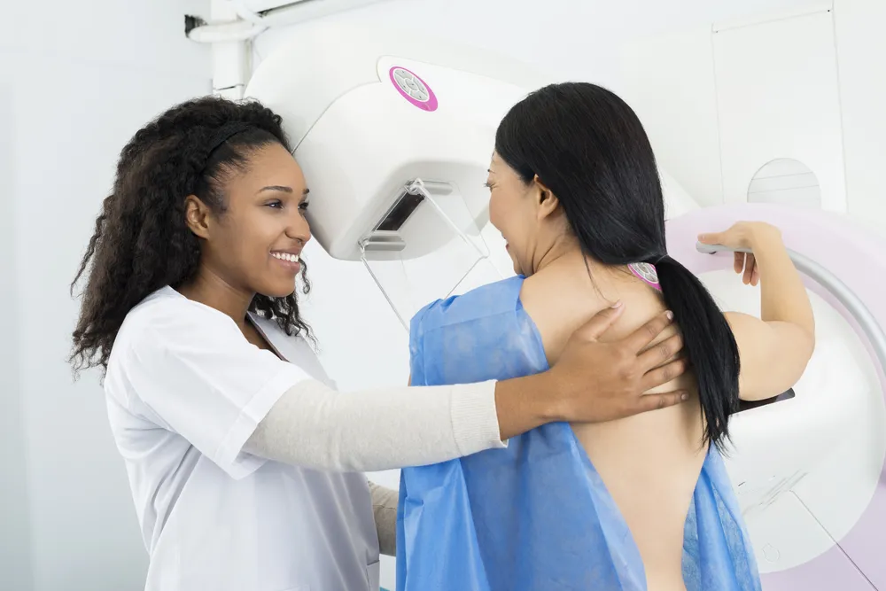

What to Know Before Your First Mammogram

Mammograms are an important cancer screening that can detect small changes in your breast tissue that may indicate breast cancer . Your doctor will likely tell you when it’s time to start getting mammograms but you don’t need to wait for them to bring it up. If you are high risk, talk to your doctor about when would be the best time for you to get your first mammogram.
So now it’s time for your first mammogram and you have no idea what is going to happen. You aren’t the only one. Mammograms make many women nervous, scared, and some even avoid it. But we’re here to squash all your fears. Read on to learn all the information about mammograms so you can walk in confidently for your first one.
Knowledge is Power
If you know what to expect during your first mammogram fear and uncertainty will fall to the wayside. When you are ready for your mammogram, the technologist will position your breasts on the machine’s plate. Your breasts will need to be flattened by the machine to get the best pictures for the radiologist to read. It’s so important that you try not to tense up, which will make your mammogram go from being uncomfortable to painful.
Once the technologist is finished taking the first images with the machine they will have you reposition yourself for additional imaging. The whole thing will seem strange and odd but it’s incredibly important to get quality images for the radiologist. You don’t want to be squirming around and have to come back for a redo!
Don’t Wear Deodorant
When you are getting ready in the morning to go in for your first mammogram appointment don’t put on any deodorants, antiperspirants, powders, or creams, under your arms or breasts. “Metallic particles in powders and deodorants could be visible on your mammogram and cause confusion,” says the Mayo Clinic .
The mammogram machine uses an x-ray to see through your body’s tissues. Certain items, like clothes would obstruct the image causing the doctor to not see everything they need to see. The teeny tiny particles in some deodorants can also show up on the x-ray image which will prevent your doctor from giving you the best read out. So to play it safe just put on your favorite lotions and deodorant after your appointment.
Schedule Your Mammogram After Your Period
During the week or two before your period , your breasts can be tender or swollen. Not a good combination when you need to have them flattened by a machine. The American Cancer Society recommends avoiding mammograms the week before your period. This will help get the best images and minimize your discomfort.
If you know you have a mammogram coming up, start keeping track of your periods to know your cycle. This will help you make the best decision when it comes time to schedule your mammogram. We recommend tracking your period on your calendar or somewhere that you check often.
Testing Takes 30 Minutes
If you are worried about a mammogram taking up your entire day, you can stop. According to MD Anderson , “the entire mammogram procedure takes about 30-minutes. Each of your breasts will be compressed for only 20- to 30-seconds.” The other 29-minutes that you are not actively getting your mammogram will be spent by getting ready for the test and the technician positioning your body correctly.
With a mammogram being such a short test, it shouldn’t be something that you put off. The test can detect breast cancer and other changes within your breast. Early detection can set you up for quick treatment and potentially better success rates. We know no one likes to take time out of their day for doctor visits and tests but this is one you shouldn’t avoid.
An Abnormal Mammogram Test Result Doesn’t Mean It’s Cancer
After your first (and every) mammogram a radiologist will review the images produced by the x-ray and send a detailed report to your doctor. MD Anderson reports that “many women get suspicious findings after their first mammogram. But, that’s often because their doctor doesn’t have previous exam results for comparison.” So after your first mammogram keep the results to give to your doctor after future tests.
These suspicious findings after your first mammogram can be anything from a cyst to dense tissue. Once you have a baseline test the radiologist will know what is normal for you. If the test does show something that concerns your doctor they may order a breast ultrasound for further evaluation says MD Anderson.
Wear a Two Piece Outfit
One of the best practical tips we can give you for your first mammogram is to wear a two piece outfit. The day of your mammogram is not the day to wear a romper or other one piece clothing option. When you get to the testing office you will be handed a hospital gown. The mammogram technician will have you remove your clothing from the waist up. This will include any jewelry you have around your neck.
To make your life easier and perhaps less embarrassing we recommend wearing a two piece outfit. That means you’ll just be removing your top instead of all of your clothes. It’s just one of those things that most people wouldn’t think of when walking into their first mammogram and we want to be as comfortable as possible for your first time!
Take An Over-The-Counter Pain Reliever
If you are worried about the mammogram being uncomfortable, take an over-the-counter pain medication like ibuprofen (Advil) or acetaminophen (Tylenol) before your appointment. The Mayo Clinic recommends taking the medication “about an hour before your mammogram to ease the discomfort of the test.”
Remember though, the mammogram shouldn’t be painful. If you are in significant pain during the test let the technician know. They can adjust the plates or your position to make you more comfortable. Also, if you don’t typically take over-the-counter pain medications talk to your doctor or pharmacist before you start to avoid any unintended side effects.
Test Results
You should get your mammogram test results within 10 days of your test. If you don’t hear anything from your doctor or receive your results in the mail don’t assume no news is good news. Reach out to your doctor or where you had your mammogram done to find out your results.
According to the American Cancer Society , “A full report of the results of your mammogram will be sent to your health care provider. Mammography clinics also must mail women an easy-to-understand summary of their mammogram results within 30 days—or as quickly as possible if the results suggest cancer is present.” Make sure to store your results in a safe place so that you can bring them to future mammograms if necessary.
Know Your Health History
Before you go into your first mammogram appointment it’s important to know your whole health history. The American Cancer Society recommends telling the mammography technologist things “…such as surgery, hormone use, breast cancer in your family, or if you’ve had breast cancer before.” The source also reports that it’s crucial to pass on any breast changes or problems to the technologist.
If you aren’t certain about your family’s health history find out before you go into your appointment. Write down which family members have had breast cancer or another type of cancer. This is important for your doctor and other healthcare professionals to determine your risk level for developing cancer in the future.
When To Get Your First Mammogram
Women fall into two categories with regards to breast cancer risk. Average risk or high risk. Women with an average risk of breast cancer can start getting a mammogram when they are 40 years old. The American Cancer Society doesn’t recommend screening mammograms until women are 45 but say that women can choose to start at 40 if they prefer.
Women who are in the high risk category “may benefit by beginning screening mammograms before age 40” says the Mayo Clinic. The source recommends talking to your doctor about your risks. There are specific factors that will be taken into account to determine your risk like your family history of breast cancer . These factors will help your doctor decide the right type of testing for your situation.
You Need a Mammogram If You Have Breast Implants
Some women believe that if they have breast implants that they do not need a mammogram. Well that’s not true. According to Dr. Patel from Health.com , “women with breast implants, the purpose of a mammogram is two-fold…we can check the integrity of the implants using the imaging in addition to screening for breast cancer.”
If you have implants it’s just as important for you as for someone without them to get your first mammogram. The technician will take more images than someone without implants to ensure they get good pictures for the radiologist to read. In the end this is all to keep you and your breasts healthy and safe. (Here are some more Common Myths About Breast Cancer ).
Don’t Be Afraid
Hopefully after reading this article you have learned all the information you need to not be nervous and afraid before your first mammogram. Knowledge is power. Knowing what to expect can ease your fears and help you feel comfortable during your test.
Never hesitate to reach out to your doctor with any questions about your mammogram. If you are already at the mammogram the technician working with you should be able to also answer many of your questions. Stay safe and get your first mammogram! (For more information, read about Lifestyle tips to Protect Yourself Against Breast Cancer ).
Source: https://activebeat.com/your-health/women/what-to-know-before-your-first-mammogram/